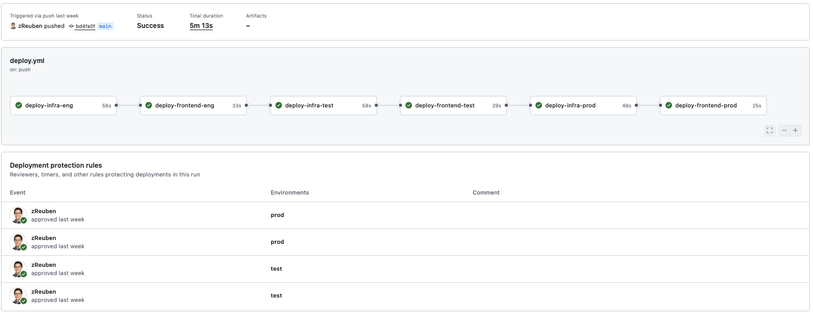
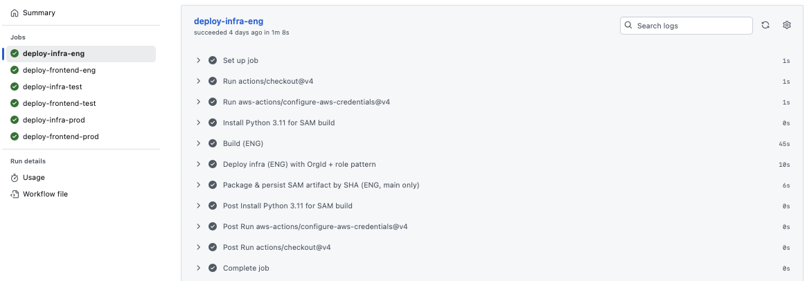
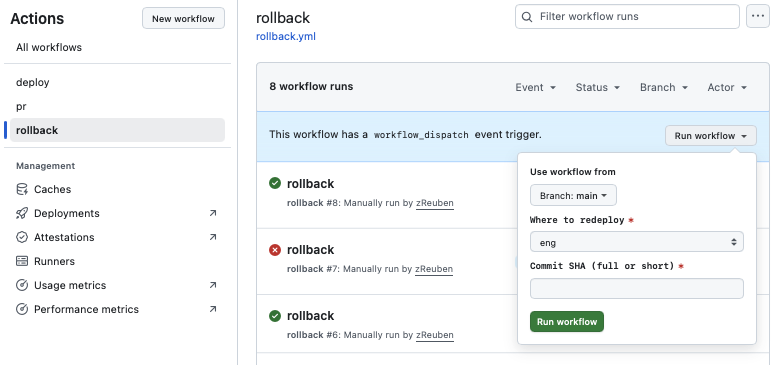

Multi-Account CI/CD Promotion Pipeline
Expanding beyond the Cloud Resume Challenge
After finishing the Cloud Resume Challenge, I realized that constantly building and testing directly against my live site wasn’t realistic. In the real world, teams build once and promote through controlled environments with approvals, rollbacks, and guardrails. So I decided to take what I had and expand it into a true multi-account, multi-environment CI/CD pipeline.
The first big step was setting up AWS Organizations. Instead of a single developer account, I now have four: a management account, plus dedicated engineering, test, and production accounts. I wrote shell scripts to make it easy to jump between them, assuming the right IAM role depending on where I needed to work. This gave me cleaner isolation and the flexibility to test changes safely before they ever touched production.

With accounts in place, I turned my attention to the pipeline itself. In the engineering environment, GitHub Actions runs all unit and integration tests. If the build passes, it packages the backend (SAM + Python Lambdas) and frontend bundle into a single artifact and uploads it to S3. From there, the exact same artifact is promoted forward — no rebuilding, no drift. Before anything moves into TEST or PROD, I have to explicitly approve it, which is a simple GitHub click but adds real accountability.

To keep things safe, I also built in rollback workflows. By specifying a commit SHA, I can skip the build phase and immediately redeploy a known-good artifact. CloudFront gets invalidated automatically so the rollback is visible in about a minute. This gives me a safety net to experiment freely without worrying about breaking my live site.

Finally, I put lifecycle policies on the artifact S3 bucket so it doesn’t grow forever. Older versions are cleared out after 60 days, but the current versions always stay. Combined with GitHub OIDC for short-lived credentials and Vault for secret handling, the pipeline now feels much closer to how a real company would manage deployments.
What I learned
This project taught me the importance of environment separation, immutable artifacts, and approval-driven promotions. It also gave me first-hand experience managing multiple AWS accounts under Organizations, something that had always felt intimidating until I set it up myself. Now I have a safe, repeatable way to take changes from development all the way to production — and roll them back if I need to.